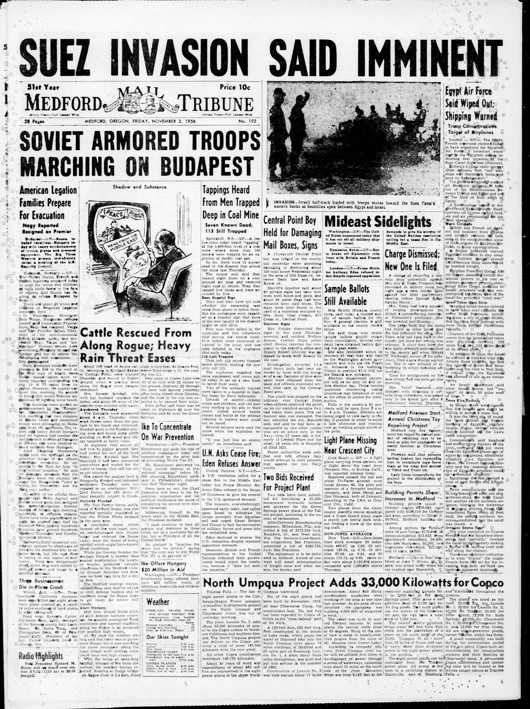

HN HN-614 · November 3, 1956 · War, Conflict & Security > Military Operations & Mobilization > Military deployments
Source: Decatur Daily Democrat, p. 1 — original page; U.S. State Department, Hungary in 1956.
Report: “Soviets Close Armored Ring at Budapest†described Soviet forces around Hungary's capital and reports that the Austrian frontier was being closed, while another part of the same page covered the simultaneous fighting in Egypt.
Assessment: The dispatch described the immediate prelude to the renewed Soviet assault on November 4 and the suppression of the Hungarian uprising. Reports relayed through Vienna were not direct verification of every troop number; the simultaneous Suez crisis also shaped international diplomatic responses.
Authentic scans retrieved from Historic Oregon Newspapers (University of Oregon). Article crops are located using the archive's own ALTO OCR word coordinates and rendered at native crop resolution; page scans are 1,200-pixel-wide renditions. No images were generated, mocked, or retouched.

Not yet acquired. Queued for provider-specific acquisition testing (see source-acquisition manifest).
URL (preserved verbatim): https://newspapers.library.in.gov/?a=d&d=DCDD19561103.1.1
Saved research report: Historical_Newspaper_Event_Research_603-627_2026-10-23.md
Evidence note: A newspaper report means a historical publication made a claim; it does not establish that claim as fact. Contemporary reporting is separated from later scholarly context and our own assessment.